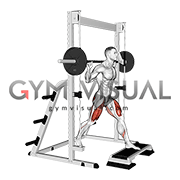
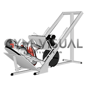
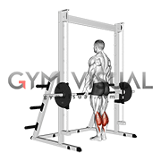
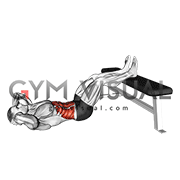
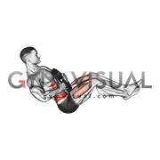
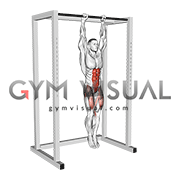

الثلاثاء - أرجل + بطن

Squat
❌ الشائع: انحناء الركب للأمام أو تقوس الظهر

Leg Press
❌ الشائع: إنزال الوزن أكثر من اللازم أو رفع الكعبين

Walking Lunges
❌ الشائع: ارتطام الركبة بالأرض أو ميل الجسم للأمام

Leg Extension
❌ الشائع: فرد الركبة بالكامل بسرعة

Standing Calf Raise
❌ الشائع: القفز بدلاً من التحكم في الحركة

Sit-ups
❌ الشائع: استخدام الزخم وعدم التحكم بالنزول

Russian Twist
❌ الشائع: تأرجح الجسم بدلاً من لف الجذع

Hanging Leg Raise
❌ الشائع: التأرجح أو استخدام الوركين